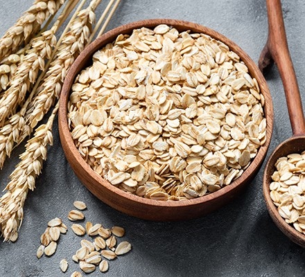
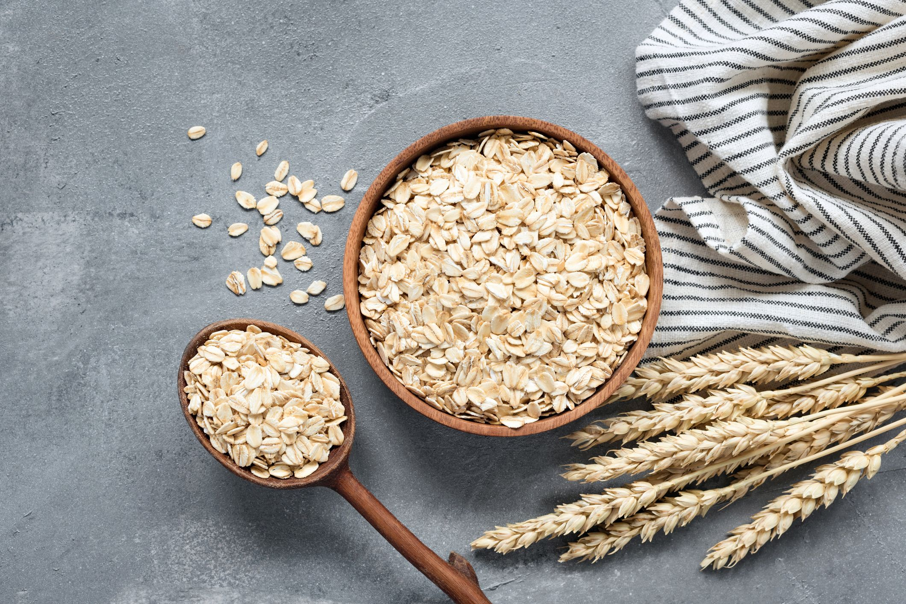

Oats
Introduction

The oat (Avena sativa), sometimes called the common oat, is a species of cereal grain grown for its seed, which is known by the same name (usually in the plural, unlike other cereals and pseudocereals). Oats are used for human consumption as oatmeal, including as steel cut oats or rolled oats. Oats are a nutrient-rich food associated with lower blood cholesterol and reduced risk of human heart disease when consumed regularly. One of the most common uses of oats is as livestock feed.
Avenins are oat gluten proteins, similar to gliadin in wheat. They can trigger celiac disease in a small proportion of people. Also, oat products are frequently contaminated by other gluten-containing grains, mainly wheat and barley.
Nutritions
Here are some of the key nutritional facts about oats:
- Macronutrients:
- Oats are relatively high in protein for a grain, with around 17g of protein per 100g dry oats.
- They contain around 66g of carbohydrates per 100g, mostly from starch.
- Oats contain a good amount of fiber, with 10.6g of fiber per 100g dry oats.
- They have a moderate fat content of around 6.9g per 100g, which includes healthy unsaturated fats.
- Micronutrients:
- Oats are a good source of thiamine (vitamin B1), iron, magnesium, phosphorus, zinc and copper.
- They provide 51% of the recommended daily intake of thiamine per 100g.
- Oats contain antioxidants like avenanthramides, which are only found in oats.
- Other Nutrients:
- Oats contain beta-glucan, a type of soluble fiber with cholesterol-lowering effects.
- They are one of the few sources of plant-based protein that contains all nine essential amino acids.
- Oats contain more protein and healthy fats compared to other typical cereal grains.
In summary, oats stand out nutritionally by providing a well-balanced source of protein, carbohydrates, fiber, healthy fats, vitamins, minerals and antioxidants. The fiber and nutrients in oats provide numerous health benefits.
Soil anf Nutritions
Soil Requirements for Oats:
- Soil pH: Oats prefer a slightly acidic to neutral soil pH range of 6.0 to 7.0. They can tolerate a slightly lower or higher pH, but the ideal range allows for optimal nutrient uptake.
- Soil Texture: Oats grow best in well-drained, loamy soils. They can tolerate clay soils, but heavy, poorly drained soils should be avoided as they can lead to root rot and other issues.
- Fertility: Oats have moderate nutrient requirements and respond well to fertilization. The ideal soil should have:
- Nitrogen: Oats need a steady supply of nitrogen for growth and grain production. Typical N requirements range from 50-100 lbs per acre.
- Phosphorus: Important for root development, flowering, and grain fill. Requirement is around 20-40 lbs of P2O5 per acre.
- Potassium: Aids in disease resistance, winter hardiness, and grain quality. Require 40-80 lbs of K2O per acre.
- rganic Matter: Oats benefit from soils with good organic matter content (2-4%) as it improves soil structure, water-holding capacity, and nutrient availability.
Nutritional Value of Oats:
Oats are highly nutritious and provide a range of important nutrients:
- Protein: Oats are relatively high in protein for a cereal grain, containing around 17% protein.
- Fiber: Oats are an excellent source of soluble fiber, primarily in the form of beta-glucan, which can help lower cholesterol and regulate blood sugar levels.
- Vitamins and Minerals: Oats are a good source of thiamine (vitamin B1), iron, magnesium, phosphorus, zinc, and copper.
- Antioxidants: Oats contain unique antioxidants called avenanthramides, which have anti-inflammatory and anti-itching properties.
- Low Glycemic Index: Despite being a carbohydrate source, oats have a relatively low glycemic index, which means they don't cause sharp spikes in blood sugar levels.
- Plant Compounds: Oats contain beneficial plant compounds like lignans and phytosterols, which may provide additional health benefits.
By providing a nutrient-rich soil environment and proper fertilization, oats can grow and produce a highly nutritious grain suitable for human and animal consumption.

How to grow Oats
Here are some tips for planting oats:
- Soil Preparation:
- Oats grow best in well-drained, fertile soil with a pH between 6.0-7.0.
- Work in aged manure or compost before planting to improve soil fertility.
- Loosen the soil to a depth of 6-8 inches before planting.
- When to Plant:
- Oats are a cool-season crop that can be planted in early spring or fall.
- Spring oats are planted 4-6 weeks before the last expected frost.
- Fall oats are planted 6-8 weeks before the first expected killing frost.
- Planting:
- Broadcast oat seeds evenly over the prepared soil at a rate of 2-3 bushels (64-96 lbs) per acre.
- Incorporate seeds into the top 1-2 inches of soil by raking or using a seed drill.
- Can also plant in rows 6-8 inches apart at a rate of 2-3 lbs per 1000 sq ft.
- Growing:
- Keep soil moist until plants germinate and become established.
- Fertilize according to soil test recommendations, typically with nitrogen.
- Control weeds by cultivating shallowly or using mulch.
- Harvest:
- For grain, harvest oats when seedheads turn yellow/golden brown.
- For forage/hay, harvest when plants begin to flower.
With the right soil, timing and care, you can successfully grow a crop of nutrient-rich oats in many regions. Adjust planting times based on your local climate.
Fertilizing
Here are some tips for fertilizing oats:
- Nitrogen (N):
- Oats have a relatively high nitrogen requirement compared to other small grains.
- Apply 60-120 lbs of N per acre, depending on yield goals and soil fertility.
- Split the N application - apply 1/3 to 1/2 at planting and the remainder when plants are 6-12 inches tall.
- Phosphorus (P):
- Oats don't require as much P as nitrogen, but it's important for seedling vigor and grain fill.
- Apply 20-40 lbs of P2O5 per acre based on soil test results.
- Band the P near the seed row at planting for best uptake.
- Potassium (K):
- Adequate K is needed for stalk strength, winter hardiness and disease resistance.
- Apply 40-80 lbs of K2O per acre based on soil test levels.
- K can be broadcast and incorporated before planting.
- Sulfur (S):
- Oats have a higher S requirement than other grains.
- Apply 10-20 lbs of S per acre, especially on coarse-textured, low organic matter soils.
- Micronutrients:
-
- Oats are responsive to zinc, manganese and boron on deficient soils.
- Have soil tested and apply micronutrients if deficient.
- Timing:
- For spring oats, apply all P, K, S and any needed micronutrients before or at planting.
- Split N between planting and when plants are 6-12 inches tall.
- For fall oats, apply half the N at planting and remainder in early spring.
Proper fertilization, based on soil tests, can increase oat yields, standability and grain quality substantially. Pay special attention to nitrogen management.